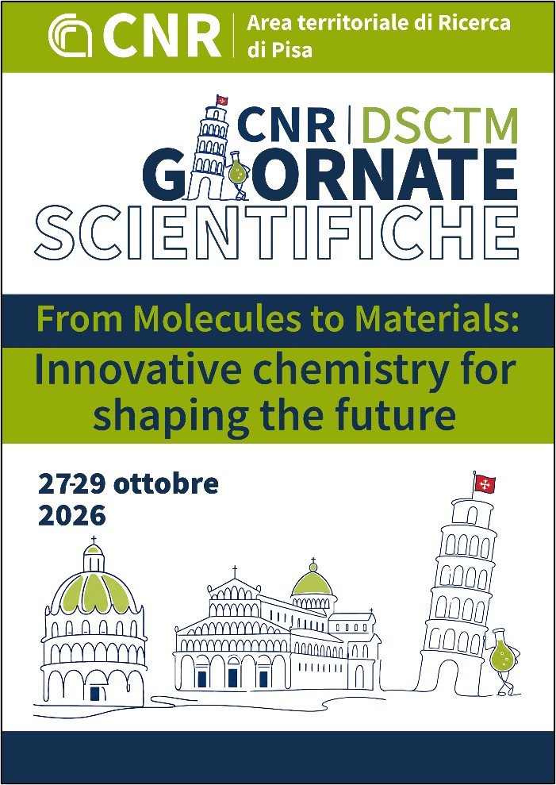

Event & Conference Design27–29 ott 2026 · concluso ✓27–29 Oct 2026 · done ✓
Giornate Scientifiche DSCTM 2026DSCTM 2026 Department Days
Il convegno annuale del Dipartimento di Scienze Chimiche e Tecnologie dei Materiali del CNR, “From Molecules to Materials: Innovative Chemistry for Shaping the Future”, si è svolto all'Area della Ricerca CNR di Pisa dal 27 al 29 ottobre 2026, con oltre 150 contributi tra talk, flash e poster. Ho fatto parte del comitato organizzatore, occupandomi soprattutto dei materiali grafici e digitali.
The annual conference of CNR's Department of Chemical Sciences and Materials Technology, “From Molecules to Materials: Innovative Chemistry for Shaping the Future”, took place at the CNR Research Area in Pisa on 27–29 October 2026, with 150+ talks, flash talks and posters. I was part of the organizing committee, mainly looking after the graphic and digital materials.
- il mio contributo
- my part
-
- Ho ideato e realizzato la locandina ufficiale
- Ho progettato una pagina HTML interattiva per i totem informativi
- Ho sviluppato un tool HTML per pianificare i contenuti dei monitor in auditorium
- Conceived and designed the official poster
- Designed an interactive HTML page for the info totems
- Built an HTML tool to plan content across the auditorium screens
* totem e tool monitor: uso interno all'evento, non pubblici.
* totem & screen tool: internal to the event, not public.

🎨 locandina by me🎨 poster by me